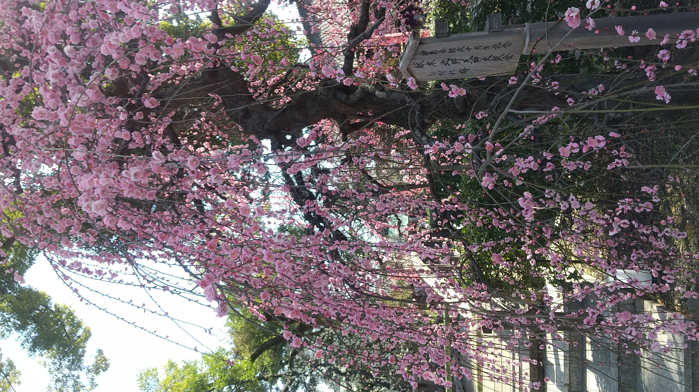
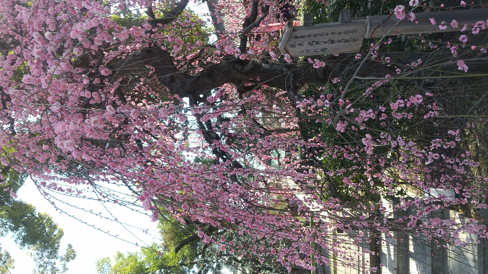
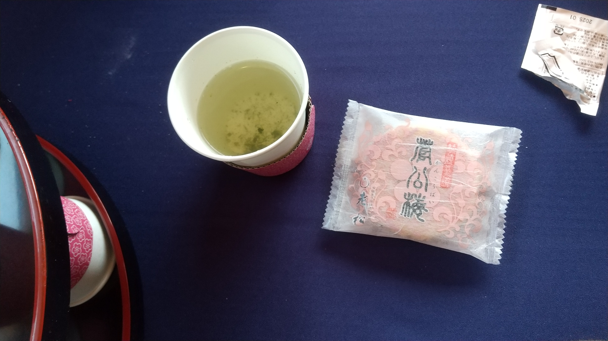

mokuji
menu
くーちゃんの厄払い京都散策
ハローみんな元気？こっちは経過観察の通院も終わったから100%回復バッチシってとこね。それにしても時間が経つのが早いわホント。
あのゴタゴタからもう半年経ったってマジ？
半年も経って完治したから旅行行こうかってなってね、せっかくだし厄払いしたいのよ。ハチに聞いたら25歳って丁度厄年らしくてさ。だったら京都に行って神社仏閣巡りしかないじゃない！(※1)
1日目
ってことで思い立ったが吉日、京都に着いたわよ！キティちゃんが出迎えてくれたわ！キティちゃん、あなたどこにでもいるわね。
新幹線の下車は京都市内ならどこでもいいから、まずは遠くのとこから行っちゃいましょ。
着いたわよ広隆寺！聖徳太子にゆかりのあるとっても古いお寺なんですって。私も10人いっぺんに話を聞ければ奉られたりするのかしら？
庭園がとても綺麗だったわよ。和って感じがしていいわね。これから巡る所全部そうだけど。
お腹すいたから昼食にしたわ。京湯葉うどんらしいわよ。このふよふよしたのが湯葉かしら？不思議な食感ね。
セットでマグロ丼も食べちゃった。ふつーにおいしかったわよ。
すごーい！路面電車よ！渋谷じゃ見たことないよね？乗りましょ乗りましょ！
乗り場にこんな自販機あったんだけど、これ自販機で売って良い物なの？とりあえずありがたみは少し減りそうね。
ぶらり電車に揺られて着いたのは...嵐山よ！平日なのに人がいっぱいいるわ！流石観光地ね。 渋谷も人が多いけれど、渋谷よりも外国の人が多いように感じるわ。やっぱり観光名所だから？

訪れた名所は竹の小径よ。360°どこ見ても竹だらけ！まるで別世界に迷い込んだみたいだわ。真夜中に散策すればきっと幻想的でしょうね。

小径を抜けてブラブラ歩いてたら梅が綺麗に咲いてたから撮ったわ。渋谷だとまだ咲いてないのよねえ。早くみんなでお花見したいのだけれども。
ボートがあったわよ！みんなで旅行してれば一緒に乗って楽しめたんだけどねえ。一人旅になれてるから先走っちゃったわ。 吉更ちゃんとか良いリアクションしそうよね。バランス崩しそう。雀部さんとヤトちゃんは普通に漕げそうな気がするわ。
橋を渡って辿り着いた先は法輪寺とその中にある電電宮(※2)よ。電電宮は電気電波デジタルの神様を祀っていて、デジタル関連の会社の人がよくお参りに来ているそうよ。私も自分のサーバーが落ちないように祈願しに来たわ。
エジソンとヘルツの霊を祀ってらっしゃるそうよ。面白いわねえ。現代の信仰のカタチってこと？
次来たのは梅宮神社ね。お酒と梅の花が特徴の神社よ。綺麗に撮れた写真おすそわけしてあげる。
ここ以外にもお花の写真いっぱい撮ったのよね。あとのお楽しみってことで。
松尾大社もお酒を祀ってるわ。見て！酒樽がいっぱいある！すごーい！お酒の資料館もあるんですって。ちょっと飲むのもありかも...。
たっぷり歩いて疲れたわ～。泊まるホテルのラウンジ試飲し放題なんだって。わーい飲んじゃお飲んじゃお。みんなはお酒強かったかしら？ 吉更ちゃんは弱そうだけど。もしくは弱くはないけど調子乗って飲み過ぎちゃうタイプ。ハチはその辺見定めが上手いのよねえ。べろんべろんのアイツ見たことないもの。 雀部さんはコントロールできそうだけどストレス溜まったときはあえてガッツリ酔ってそうよね。ヤトちゃんは案外いける口だと思うわ。最後までピンピンしてそう。 私？もちろんお酒弱いわよ？嗜む程度で十分よお酒なんて。たくさん飲んでも頭痛のタネにしかならないんだからあんなの。
そして夕食はお好み焼きよ！京焼きっていうの？ホタテとか海老とかの海鮮にお肉をミックスして焼いてもらったわ。美味しかった！
2日目
よーし元気復活100%！朝イチ来たのは金閣寺よ！見て！鏡富士ならぬ鏡金閣！天気良い日にこれて良かった～。今度来るときは雪のときに来てみたいわね、きっと幻想的よ。 悲しいけれど中には入れないのよね。一枚天井(※3)見たかったなあ。
次に来たのは千本えんま堂よ。何回か地獄を行ったり来たりしたからね。えんま様にもお参りしなきゃ。当分は死の淵なんてごめんだわ。 私は別にいいのだけれど、私が死んで悲しんでくれる人もいるみたいだし。入院中のみんなの声全部聞こえてたのよ？小っ恥ずかしくてしょうがなかったわ。
次に来たのは北野天満宮よ！3月は梅が見ごろよね！さっそく見ていきましょ！
その前に面白い物みつけちゃったから撮っちゃった。抗菌撫で牛なんて今どきよねえ。みんなは風邪とかひいてない？大丈夫？
 

本当に桜と梅が綺麗なのよ！見て見て！もっといっぱい写真撮ったのだけど、一旦この辺にしておくわ。
歩き疲れちゃったからちょっと休憩。昆布茶と和菓子をいただいたわ。座って見上げる桜もいいわねえ。

そして京都御所よ！くっそ広くて巡るだけで一日終わりそう。とりあえず中の見学だけしましょうか。 手荷物検査があることは知ってるから今日はナイフ持ち歩いてないわよ。くーちゃんてば天才！
本当にどの建物も大きいわねえ。どうやら勾玉とか鏡とか置くだけの場所で建物一戸立てるくらいだし、スケール大きすぎない？

そして庭園も綺麗なのよ。優雅でいいわあ。ずっとのんびりしていたくなるわね。え？もう閉園の時間(※4)？嘘でしょ？
最後に一条戻橋に寄ったわ。この世とあの世を繋ぐ橋なんですって。死んだ人にも会えるらしいわよ？私が死んだら会いに来てよ。角生やして待ってあげる。
今日の夕食はスープカレーよ！初めて食べたけどこういうのもいいわね。カレーはドロドロとしたルーが大好きだったんだけど、ちょっと鞍替えしたくなるかも。 帰ったら黒猫ちゃんとハチにも作ってあげよ。
3日目
ようやく旅の目的地に着いたわよ！八坂神社！せっかくお祓いしてもらうなら八の字入ってる神社がいいなって思ってさ、丁度ピッタシあったんだよね。
中はこんな感じ。かなり立派よね。お参りも済んだしさっそくお祓いしてもらいましょ！
ってあれ？女性の厄年は33歳？25歳が厄年なのは男性？......ってことは私もしかして厄年じゃない？じゃあこの旅なんなの？
まあいっか！
楽しいから問題ないわね。問題あるとしても悪いのは勘違いした私だし。それはそれとしてハチ？厄年が男性と女性で違うことをアンタが言ってれば何の問題もなかったんだけど！？まあアイツも忘れてたんでしょうねえ...。
せっかく八坂神社まで来たし隣にある公園も楽しんじゃいましょ。眺めいいわねえ。
思ったより鳥が多いわねえ。鳴き声マネしたらもっと近くまで来てくれないかしら？ｸﾙｯﾎﾟｰ...。どっか行っちゃったわ。
抹茶アイスが売ってたから買っちゃった。旅行といったらくいだおれよね？抹茶おいしー！
ポケモンのマンホールね、かわいい！みんなはどんなポケモンが好きかしら？私はスワンナとか好きだけど。似合ってるのはなんだろうなあ、ヒトツキとか？みんなにあったポケモンを考えるのも楽しそうね。
最後の観光は伏見稲荷大社よ！両脇にキツネちゃんがいるわ！
伏見稲荷といったら千本鳥居よね！千本潜ってくわよ！あれ、何本通ったっけ...？うん、数えるの無理ね。諦めましょ。
おもかる石は願いをこめて持ち上げて、軽かったら願いが叶って、重かったら努力をすればいずれ叶うって噂があるらしいわよ。持ってみましょうか。 うわっ、そこそこ重くない？そりゃ願いなんて簡単に叶わないものね。
おみくじあったわ！引いちゃいましょ、私の運勢は...
やったわ大吉よ！今年一年ラッキーだと良いわね！もう不運(※5)は懲り懲りよ。
旅の最後はお土産よ！まずは漢字ミュージアムってとこに来てみたわ。へー漢字のキーホルダーねえ。って羽澄九弋が一文字もないじゃない！ 弋とか澄とかは百歩譲って分かるけど、九も羽もないってどういうことよ！数字はないとしても羽くらい...ハ行(※6)見てもないわねえ、ぐすん。
新京極商店街に着いたわ！みんなのお土産はとりあえず生八つ橋と普通の八つ橋買ったわよ！雀部さんは甘い物苦手でしょうから漬物も買っておいたわよ。千枚漬けでいいかしら？
これにてくーちゃんの京都旅行はおしまい！2泊3日とても有意義に過ごせたわ！まだまだ語りたいこといっぱいあるけど、それは八つ橋つまみながら話すことにするわ。 今度はみんなで旅行行きたいわね。それじゃ、このへんで。
※2 電電宮は電気システム安全祈願やmicroSDカードのお守りも売ってるらしいわよ。実利なご利益があるお守りって珍しいわね。
※3 えーと...天井すら金箔で敷かれていて、まるで一枚の天井のようだから一枚天井の噂が流れた...と。え、じゃあ本当に一枚でできているわけじゃないの？
※4 9時から15時くらいの営業時間よ。お昼から見始めるともしかしたらギリギリになるわ。注意しましょ。
※5 白猫騒動のときは相当運がなかったわよねえ、吉更ちゃんほどじゃあないけど。
※6 後で知ったんだけど、羽はア行にあったらしいわよ、羽(う)ってこと？分かるかそんなもん！